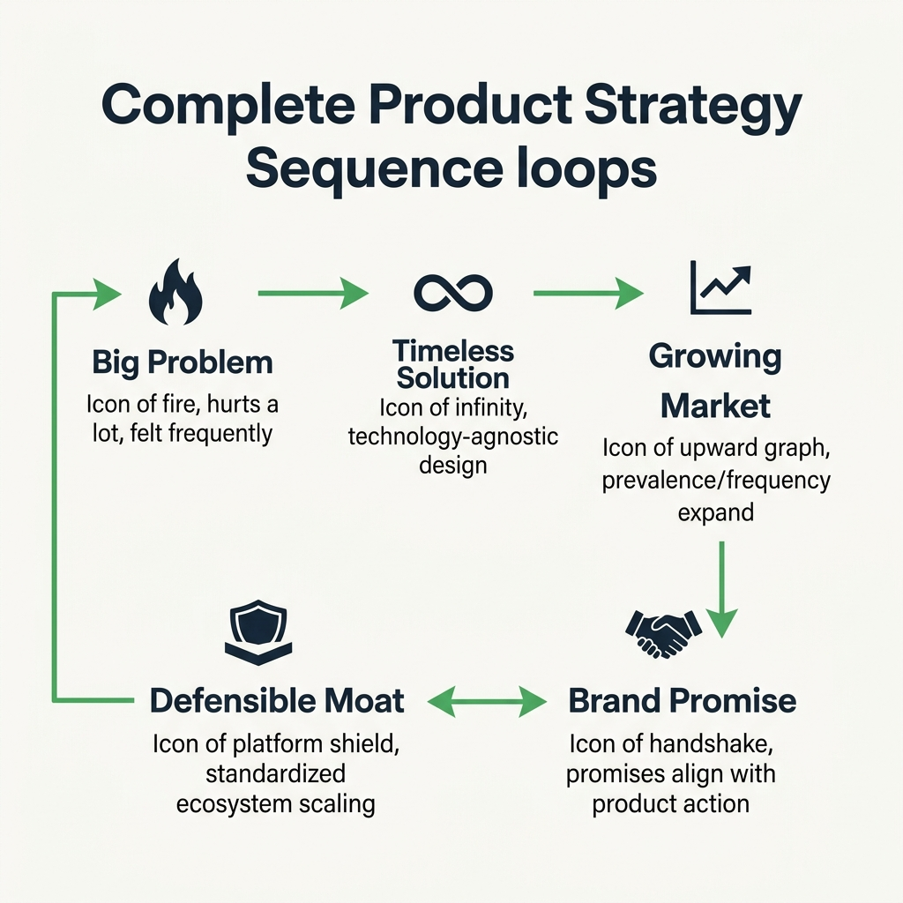

Your goal
Synthesize motivation reframing, sizing metrics, growth forecasts, and brand/moat defensibility frameworks to transition cleanly into solution space goal cascades.
Lecture overview
This lecture recaps the key methodologies covered in Section 3 and provides a conceptual bridge from the Problem Space to the Solution Space.
1. Recapping the Problem Space Roadmap
Section 3 focused entirely on diagnosing, evaluating, and expressing customer problems. The journey progressed through three major phases: Exploration (unpacking motivation goals), Evaluation (Kano Model sorting, sizing, and market growth forecasting), and Prioritization & Timeless Expression (competing grids and technology-agnostic statements).
2. The Risk of Descriptive, Locked Statements
If problem statements are tied to a specific technology (e.g. Bluetooth), product teams make deep architecture commitments around it. If that technology fails, the company suffers massive losses. Timeless statements keep the focus on customer value, allowing teams to swap delivery technologies easily.
3. Transitioning to the Solution Space
Once validated, we transition to the Solution Space. Designing solutions requires balancing Business Needs (viability, margins, goal management) with Customer Needs (value, usability, utility).
4. Next Steps: Goal Management Frameworks
To address the Business Needs layer, Section 4 explores how organizations establish Goal Management Frameworks (e.g. OKRs) to coordinate employee action toward corporate objectives.
Common Misunderstandings
"The solution space replaces the problem space"
Correction: The solution space does not replace the problem space. Product teams must continuously keep one foot in the problem space (user research, validation) and one in the solution space (prototyping, testing feasibility) to ensure product-market fit.
"Goal management frameworks are only for executive management"
Correction: Standard frameworks (like OKRs) are critical for product managers. They provide the quantitative parameters that justify prioritization decisions. Without a business goal framework, a PM cannot align stakeholders on which user problems to solve first.
Key concepts and definitions
- Problem Space: The customer goals, needs, and pain points that a product team seeks to understand and validate.
- Solution Space: The technical features, business configurations, and designs created to address validated problems.
- Goal Management Framework: A system (e.g. OKRs) used to align individual team targets with corporate strategic goals.
Visual summary

34-visual-summary.png
Sequential Flowchart: Problem Exploration -> Kano Sort -> Timeless Expression -> Brand Promise -> Defensible Moat.
Interactive Practice
Section 3 Strategic Sequence Simulator
Click the buttons in sequence to move a product opportunity (e.g. Ridesharing) through the Section 3 roadmap steps.
Section 3 Diagnostic Final Exam
Validate your synthesis of Section 3 concepts.